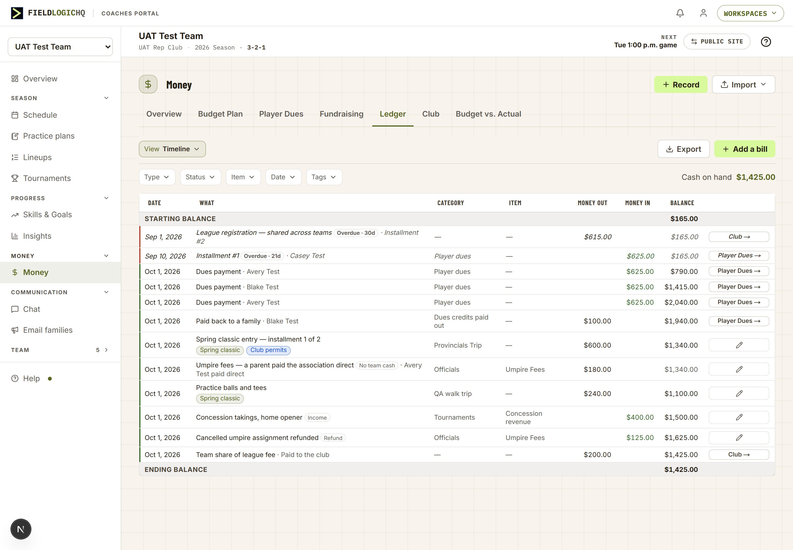
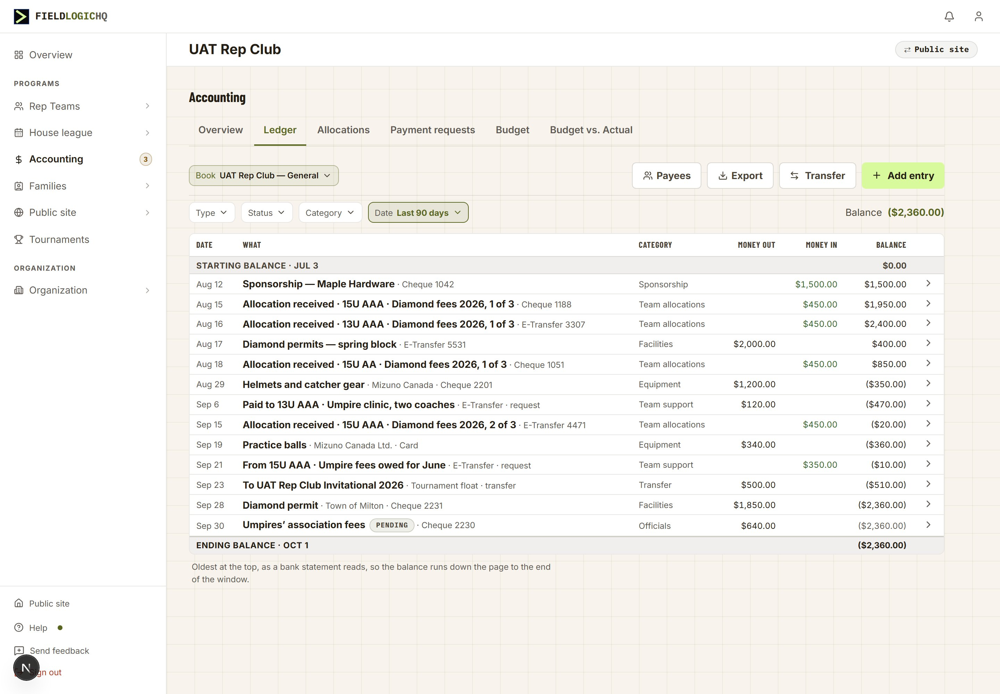
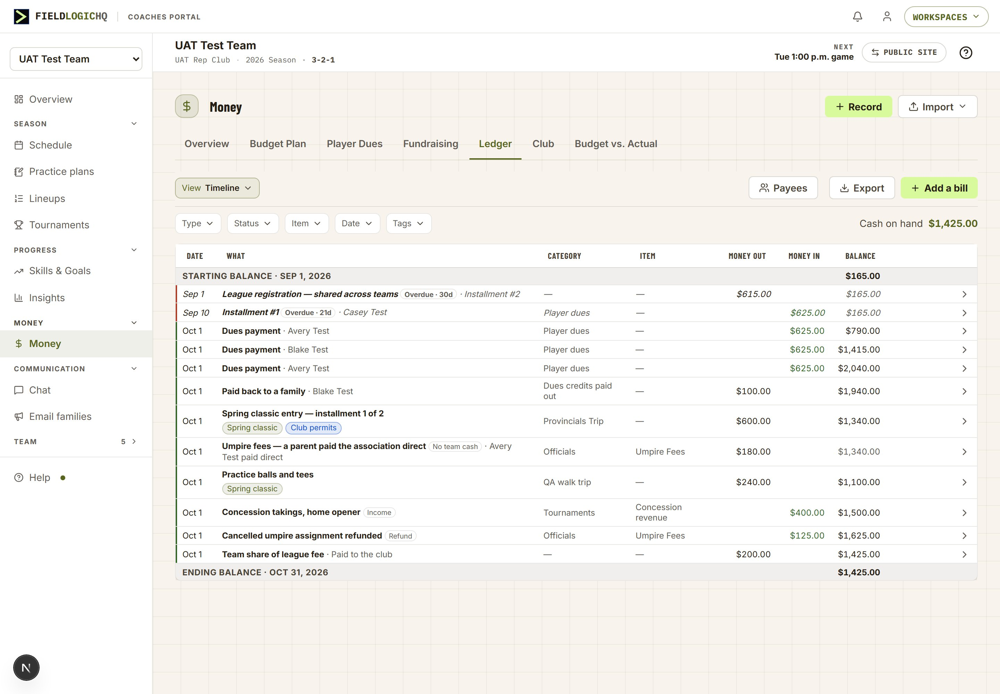
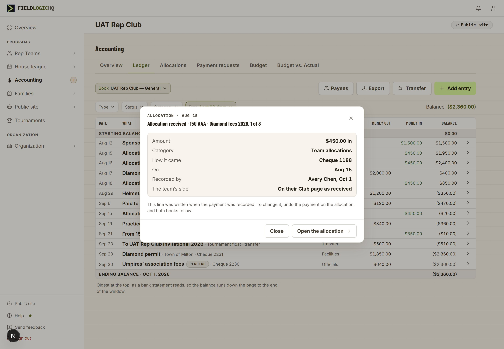
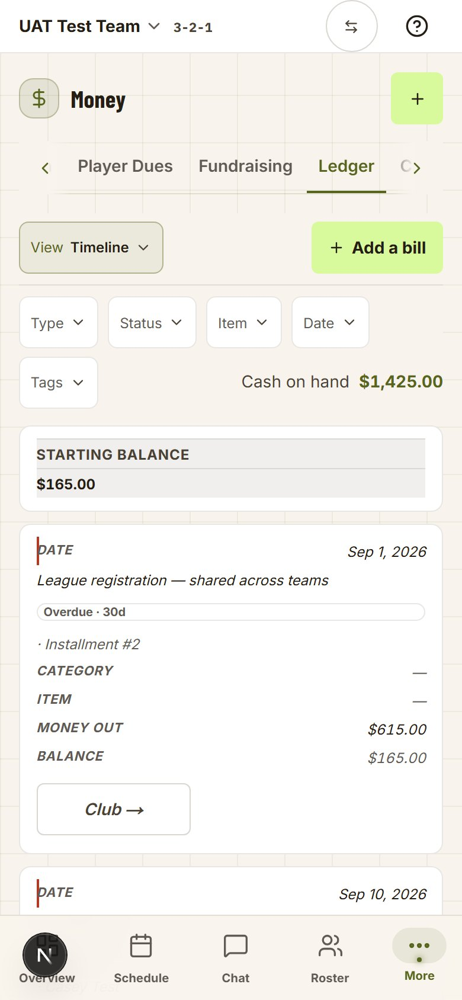
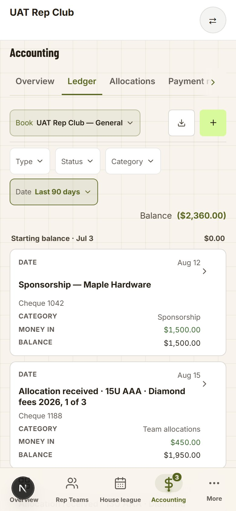
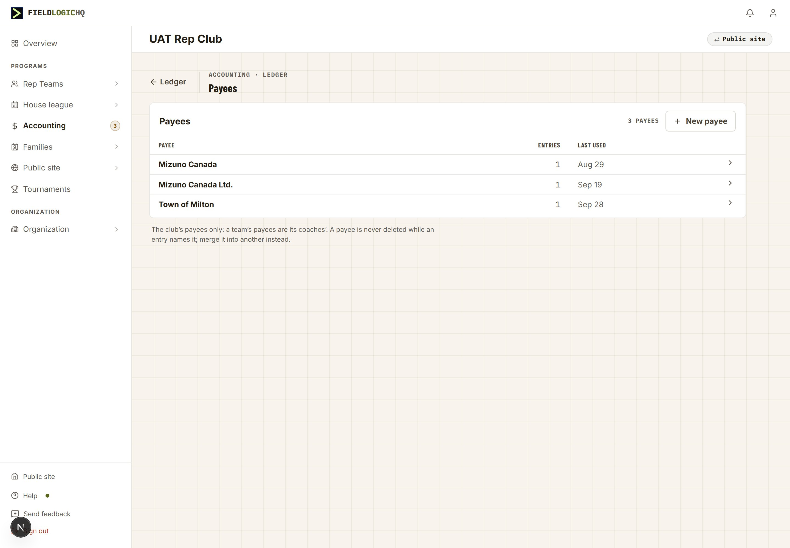
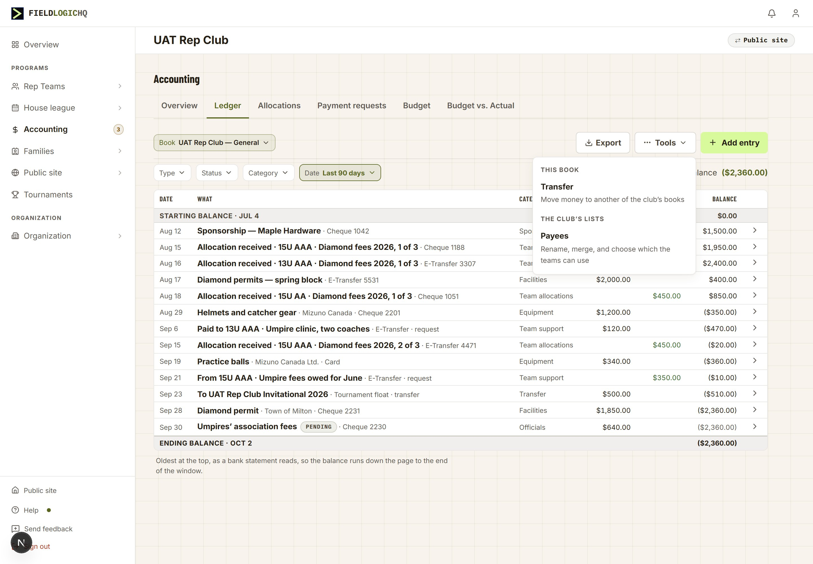
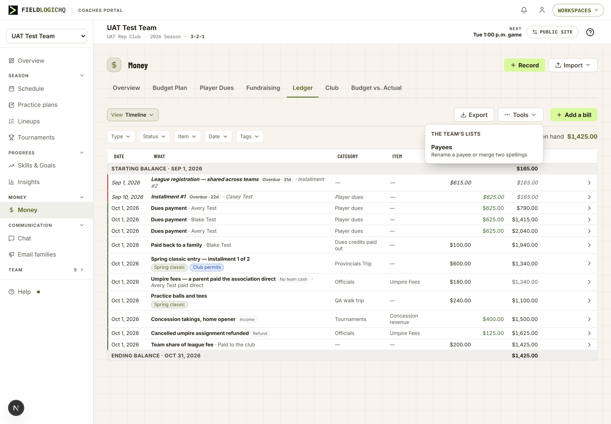

On 2026-09-30 you ruled that the club’s book reads exactly like the coach’s Ledger, with two deliberate differences. Laid side by side, five more differences show up that nobody decided. Each numbered marker opens what the screen does today and what the proposal changes.


Sizes are the same. Measured at one window width, both tables print 12px text and 28–29px rows. The club’s page is about 70px narrower, so its longer descriptions wrap to two lines more often. Nothing in this project changes either size.
The after frame is the live page with the four changes applied in it, so nothing here is redrawn by hand. Green markers show where each change lands.

Superseded in round 2: the Payees button drawn here moves behind a Tools menu (D6, screen 7), which also draws the whole proposed coach Ledger in one frame.
Unchanged, on purpose: the coloured edge on each row (paid, scheduled, overdue), the Item column, the Tags filter and Cash on hand (screen 7 says why). The two italic rows at the top are unpaid installments; on those rows a Record button would sit beside the arrow, the one button a ledger row keeps (ruled 2026-09-04). This fixture’s two are the club’s bill and a family’s dues, not one of the team’s own bills, so neither shows one here.
The club’s book already does decisions 1 and 3. It gains the year on its balance rows, so both books state their period the same way, and its note under the table goes, because the dated balance rows now say what it explains.
On the coach’s Ledger, a dues payment, money a fundraiser brought in or a payment to the club is written by another tab. Today those rows don’t open at all; a worded button in the last cell takes you to that tab. Under decision 3 the row itself opens, and what it opens is the window the club already shows for a line another screen wrote.

The coach’s version, row by row: a Dues payment · Avery Test row opens “Dues payment · Oct 1”, with the amount, category, the family and how it was paid, the sentence “Recorded on Player Dues. Change it there, and the Ledger follows.” and the button Open Player Dues. A fundraiser’s row names Fundraising; a payment to the club names Club. A typed entry or a bill opens exactly as it does today. New
The coach’s phone card is the older of the two. The club’s was built on 2026-10-01 to the written standard (a card per entry, register K-25). Under decision 4 the coach’s cards take the club’s shape, so the right-hand frame is the target layout.


The first club card is grey only because the capture’s pointer rested on it. On the coach’s card, an unpaid installment keeps its Record button, the one button a ledger row keeps.
Each team has its own payee list. A coach can add a payee while entering money and can never rename or merge one. The club got this page in Stage 3a for its own list. Under decision 5 the coach’s Money gets the same page for the team’s list, opened from Tools (D6, screen 7). Corrected in round 2: in a club, a coach’s picker also lists every one of the club’s payees today, under “Organization”; decision 7 (screen 8) changes that.

The coach’s version: the same page under Money, its back arrow to Ledger, listing the team’s payees only, with the note “The team’s payees only: the club’s are the club’s.” Anyone who can enter the team’s money can rename or merge. On a phone the door sits at the foot of the View menu, as the club’s sits in its Book menu. The payee picker in the money form gains a last row, Manage payees. New
A tab is a view of the book you work in (ruled 2026-09-30); Payees is a list you tidy a few times a season, so it is not a tab. The 2026-10-01 ruling puts rare tools behind Tools (⋯). Both Ledgers end with the same toolbar: the book or view menu, Export, Tools, then the one lime add. The payee picker’s last row, Manage payees…, is the other door, where a duplicate is noticed (screen 8 draws it).

Transfer moves in too: it is a rare tool on a club book. The Payees button drawn in round 1, and built on dev 2026-10-01, moves here when this is built.

The Tools menu is the portal’s own menu (the one Import opens), so it carries a heading per group. It holds one tool today; it is where the next rare coach tool goes rather than a new button.
The table standard’s rule is that a difference between two tables is either written down with its reason or it is a bug. These are the ones with a reason; the build records them in the exception register so the next comparison starts from this list.
| Difference | Coach | Club | Why it stays |
|---|---|---|---|
| The figure at the strip’s edge | Cash on hand | Balance | Ruled 2026-09-30: a club book’s balance is not the club’s cash. |
| The Date filter opens on | Around today | This month | Ruled 2026-09-30: a club book carries no money still to come, and a treasurer works by the month. |
| Item column, Tags filter | Yes | No | A club entry carries no budget item and no tags. Whether it should is Stage 3b’s question (C09). |
| The menu left of the toolbar | View (three views of one book) | Book (several books) | Different jobs: a team has one book; a club has several. |
| Transfer | No | Yes | Transfer moves money between the club’s own books. A team has one book. |
| Page header | Icon, “Money”, Record and Import | “Accounting”, no icon, no buttons | Each portal’s header rule: the coach’s hub header carries the hub’s own doors; the admin’s draws no icon and keeps a create in the tab’s toolbar. |
| Coloured edge on a row | Paid, scheduled, overdue | None | A coach’s row can be scheduled or overdue. A club line is posted, pending or void, and pending carries its own chip. |
| “No team cash” chip | Yes | No | A family paying a team bill directly. The club’s book has no such line. |
| Page width | About 1200px | About 1090px | Each portal’s page width. The club’s longer descriptions wrap a little more often. |
Ratified 2026-10-02. Owner: “I agree with your recommendations on D1-D7.” Every ask below was ruled as recommended, D7a and D7b included; the recommendation under each is what gets built.
For a coach, on Money › Ledger:
For a club treasurer: the balance lines gain the year; Transfer and Payees move behind a Tools menu; each club payee can be shared with the teams or kept as the club’s own; and a shared payee shows what each team recorded paying it (with Stage 3b).
Who sees what: anyone who can read the team’s money can open every row and every window; renaming and merging payees is for those who can enter the team’s money. The club’s own payees stay the club’s to manage.
You ruled on 2026-09-30 that the club’s book reads exactly like the coach’s. A side-by-side check found five more differences nobody chose, and in four of them it is the coach’s Ledger, the portal you named the benchmark, that has drifted from the product’s own written rules. A treasurer who also coaches reads the same kind of book two ways today.
Every team that uses Money sees decisions 1 to 4 on its most-used money screen; club treasurers see one small change. Without decision 5, a duplicate payee on a team’s books stays a duplicate forever, splitting its spending in two on every report that groups by payee.
Medium. Recommended after the §255 walks close and before Stage 3b, which adds per-team figures to the club’s side and would otherwise build on two different ledgers.
The club’s Ledger (Club Tier Stage 3a, ruled 2026-09-30, Ask 6) was built to read exactly like the coach’s, with two deliberate differences: the figure is called Balance, and the Date filter opens on This month. A comparison of the two screens on 2026-10-01, read from the code and measured in the browser, found five more differences with no recorded reason. The plan source is docs/projects/active/LEDGER_PARITY_PLAN.md.
D1 — Row dates: the statement convention. Rows print the day only, on both portals; the year is said once, on the balance rows (D2).
D2 — The balance rows name their dates. Both portals: “Starting balance · Sep 1, 2026” and “Ending balance · Oct 31, 2026”. The club’s note under its table goes.
D3 — A row opens from anywhere; one arrow. On the coach’s Ledger every row opens. A typed entry or a bill opens as today. A row another tab wrote opens a read window naming its home, with one button to it: the club’s window for an allocation line, shared rather than copied. The pencil and the worded buttons leave the cell; the name is bold; Record stays beside the arrow on an unpaid installment (ruled 2026-09-04).
D4 — One phone card. The coach’s phone card takes the club’s card recipe (register K-25), and the balance lines become plain lines between the cards. The recipe moves to the shared kit so the two cannot drift again.
D5 — Payees for every team. A Payees page under the coach’s Money for the team’s own list: rename, merge, never delete one in use. Doors: a Payees button beside Export, the View menu’s foot on a phone, and a last row in the payee picker.
D6 — Payees behind Tools. Not a tab. Both Ledgers end with the book or view menu, Export, Tools (⋯), then the lime add. Tools holds Transfer (club) and Payees, grouped; a sheet on a phone. The payee picker’s last row is Manage payees… (the club’s picker already has it).
D7 — Shared payees. The club marks a payee Shared with teams; only shared payees reach a team’s picker, under “Shared by your club”, with the notice line. A team can merge its own duplicate into a shared payee. The shared payee’s window shows what each team recorded paying it (Stage 3b). Logged with /strategy 2026-10-02 (it widens Club Tier D1 narrowly). Open: D7a (no retroactive view) and D7b (a payee already used starts shared).
/docs. Demo tours: check any stop that points at a row’s pencil or worded button.One build, D1 to D5 together, behind no flag. One migration if D5 needs a team-scope merge step; it goes to production before the promote that carries the page. A QA walk on this hub when it is built.